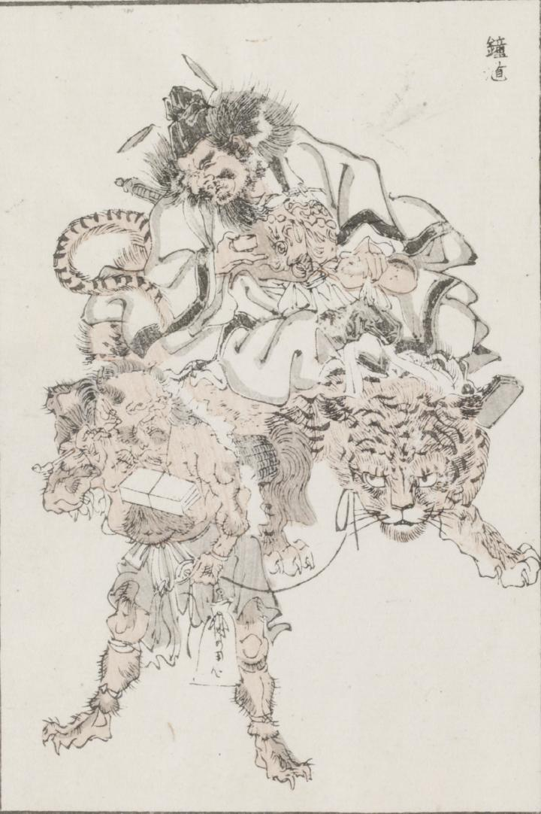

鐘馗；ショウキ，鬼；オニ，虎；トラ

虎に乗った鐘馗がひょうたんと猪口を持ち酒を飲んでいる。荷物と煙管を持った鬼が、その虎の首に結われた紐を引き歩いている。
著作者：牧墨僊／出典：親書誌：U426_nichibunken_0097：滑稽洒落狂画苑；コッケイシャレキョウガエン／日付：2007／資源識別子：U426_nichibunken_0097_0001_0000
Copyright (c)2010- International Research Center for Japanese Studies, Kyoto, Japan. All rights reserved.